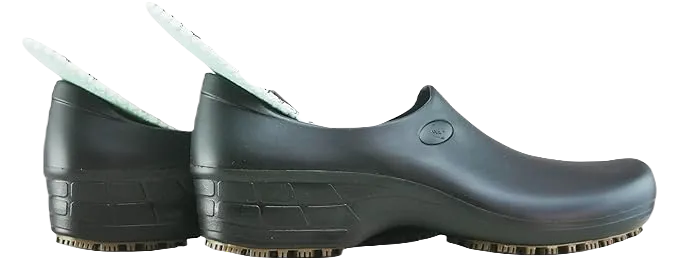

7 Best Shoes For Dental Hygienists
Every profession comes with its own unique intricacies, including specific methods and challenges that set it apart. Just as you wouldn't use the same approach for different jobs, the tools and equipment you rely on must be tailored to meet the demands of your work. The right gadgets not only enhance your efficiency but also simplify your tasks. This is why it's essential to always have your tools organized and ready, aligned with the specific requirements of your job.
For dental hygienists, the importance of appropriate footwear cannot be overstated. They often find themselves on their feet for extended periods, moving between the office and patients' rooms as needed. Without the right shoes, the constant standing and walking can lead to fatigue and discomfort. Investing in dental-themed shoes specifically designed for the demands of their role can significantly improve their comfort and overall performance throughout the day.
-
#1
New Balance Work Non slip Shoes
.webp)
The New Balance Work Slip Shoe is a highly regarded model, particularly when it comes to quality. Known for its impressive midsole, this shoe features a dual-density construction made from EVA.
This design not only enhances comfort but also provides extra spring capability, making it an ideal choice for those who spend long hours on their feet. Dental hygienists, in particular, will benefit from this added spring technology, as it alleviates fatigue during extensive periods of walking and standing.
With its focus on comfort and support, the New Balance Work Slip Shoe is an excellent investment for professionals seeking relief and durability in their footwear throughout their demanding workdays. -
#2
Skechers Work Relaxed fit sure track
.webp)
Skechers is among the top brands in footwear, known for delivering both quality and durability. These shoes are particularly recommended for professionals in the dental hygienist field, where comfort is essential.
Dental hygienists often choose Skechers for their exceptional comfort, which is crucial during long hours of work. The shoes are designed with a synthetic sole that ensures your feet remain comfortable and relaxed, even after extended periods of wear.
With their focus on providing support and comfort, Skechers stands out as an excellent choice for dental hygienists looking for reliable footwear that can withstand the demands of their profession. -
#3
Sticky Shoes Waterproof and slip
When considering footwear for female dental hygienists, sticky waterproof slip-resistant shoes stand out as one of the most versatile and aesthetically pleasing options available. These shoes not only look good but also come with essential features that enhance performance.
Picture this: while working, you accidentally spill water on your shoes. This situation can quickly turn into a nightmare, as you may not have the opportunity to change your footwear immediately. Such an incident can disrupt your comfort and overall appearance.
This is precisely why having waterproof capabilities in your shoes is crucial. It can provide peace of mind and protect your footwear when you need it most, allowing you to focus on your work without worrying about unexpected spills. -
#4
Merrell Jungle Moc
.webp)
The fourth best shoe on our list is the Merrell Jungle Moc, which boasts several features designed to keep you comfortable. When considering footwear for dental hygienists, this shoe certainly meets your requirements. Its easy slip-on and slip-off design allows dental hygienists to put them on quickly, saving valuable time—an essential aspect in a professional environment.
This shoe is constructed with a full breathable mesh, making it one of the best choices available. The breathable mesh ensures that your feet stay relaxed, even during extended periods of wear. Given the demanding nature of a dental hygienist's job, which often involves walking and standing for long hours, this feature is particularly valuable.
With the Merrell Jungle Moc, you can be assured that your feet are getting the air they need, allowing you to focus on your work without discomfort. This combination of practicality and comfort makes it a worthwhile investment for any dental professional. -
#5
Keen Utility Men’s PTC
.webp)
The Keen Utility Men’s Shoe PTC is a renowned footwear option from a well-known manufacturer specializing in outdoor and military boots. This brand is recognized for producing high-quality footwear, and their shoes are particularly well-suited for dental hygienists. That's why we're highlighting this exceptional shoe by Keen Utility.
Constructed with full-grain leather, this shoe ensures that you do not compromise on quality or durability. It delivers outstanding performance, making it a reliable choice for those who spend long hours on their feet.
One of the standout features of this shoe is its superior traction, which provides excellent grip on various surfaces. This quality is essential for dental hygienists, who require footwear that offers stability and support throughout their demanding workdays. -
#6
Birkenstock A360 Clogs
.webp)
Birkenstock is a well-regarded brand recognized for its quality and comfort, particularly designed for medical professionals such as dental hygienists.
The Birkenstock A360 clog shoe boasts an enclosed design that fully covers the foot, making it an excellent choice for protection during work. This safety feature is highly valued by dental hygienists, as it minimizes the risk of injury from sharp dental instruments.
Unlike open-toed footwear, which can expose your toes to potential harm, the A360 clog ensures your feet remain safe and secure, providing peace of mind while on the job. -
#7
Nike Air Zoom Pegasus
.webp)
It's well-known that Nike is one of the largest and most reputable companies producing high-quality shoes for various sectors, including parkour, factory work, and dental hygiene.
This particular shoe stands out for its appealing design and is specifically crafted for individuals who need to wear shoes for extended periods, making it an excellent choice for dental hygienists.
Designed to ensure comprehensive foot protection, this shoe addresses a common issue: the potential for blisters caused by the back of the shoe rubbing against the foot during movement. Thankfully, this model is engineered to prevent that discomfort, allowing dental professionals to focus on their work without worry.